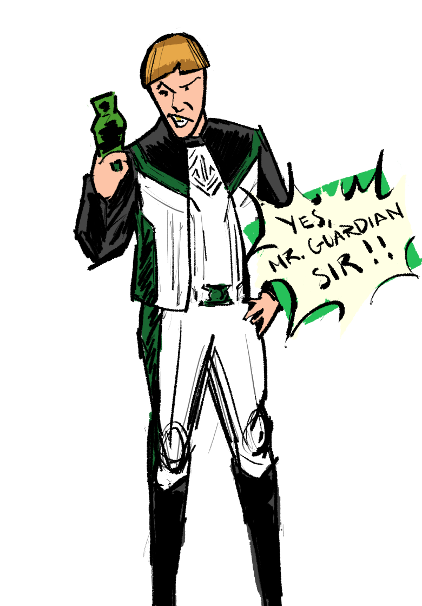
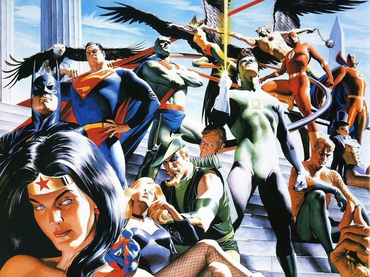

DARK & DETECTIVE
Crime, mystery, difficult choices and heroes who rely on intelligence as much as physical ability. Explore the darker, grounded side of DC.
OPEN BATMAN CASE FILE
YOUR FIRST INVESTIGATION
DC has decades of stories, alternate timelines and different versions of its heroes. You don't needa to know all of that to start. Choose the kind of story that interests you and let us point you in the right direction.
FIND YOUR WAY INTO DC
Not sure which hero to explore first? These paths introduce you to different sides of the DC Universe. Pick whichever sounds most interesting.
Crime, mystery, difficult choices and heroes who rely on intelligence as much as physical ability. Explore the darker, grounded side of DC.
OPEN BATMAN CASE FILESpace, responsibility, willpower and ordinary people facing challenges much bigger than themselves. Explore the cosmic side of DC.
OPEN GREEN LANTERN CASE FILEHope, compassion, belonging and how someone with extraordinary power chooses to help. Discover the ideals at the heart of DC.
OPEN SUPERMAN CASE FILEThe Speed Force, family, friendship and the consequences of moving faster than the world around you. Discover the many generations of the Flash.
OPEN FLASH CASE FILEAncient mythology, powerful gods, spells and supernatural forces. Discover the magical corners of the DC Universe.
EXPLORE THESE CHARACTERSSidekicks becoming heroes in their own right, young teams finding their place and the next generation carrying on a legacy.
EXPLORE THESE CHARACTERS
Some heroes work better together. Discover the teams, rivalries and alliances that bring the DC Universe to life.
EXPLORE THESE CHARACTERSNot every story is told from the hero's side. Explore complicated motives, iconic rivalries and characters who exist somewhere between hero and villain.
EXPLORE THESE CHARACTERSMonsters, horror, strange dimensions and supernatural mysteries. Explore the stranger and sometimes darker corners of DC.
EXPLORE THESE CHARACTERSWhat if things happened differently? Explore alternate realities, unexpected versions of familiar heroes and stories outside the main continuity.
EXPLORE THESE STORIESYou're not expected to understand every reference, timeline or character. These paths are just recommendations, no strict reading order, chum. If something catches your interest, just dive right in.
← RETURN TO HOME